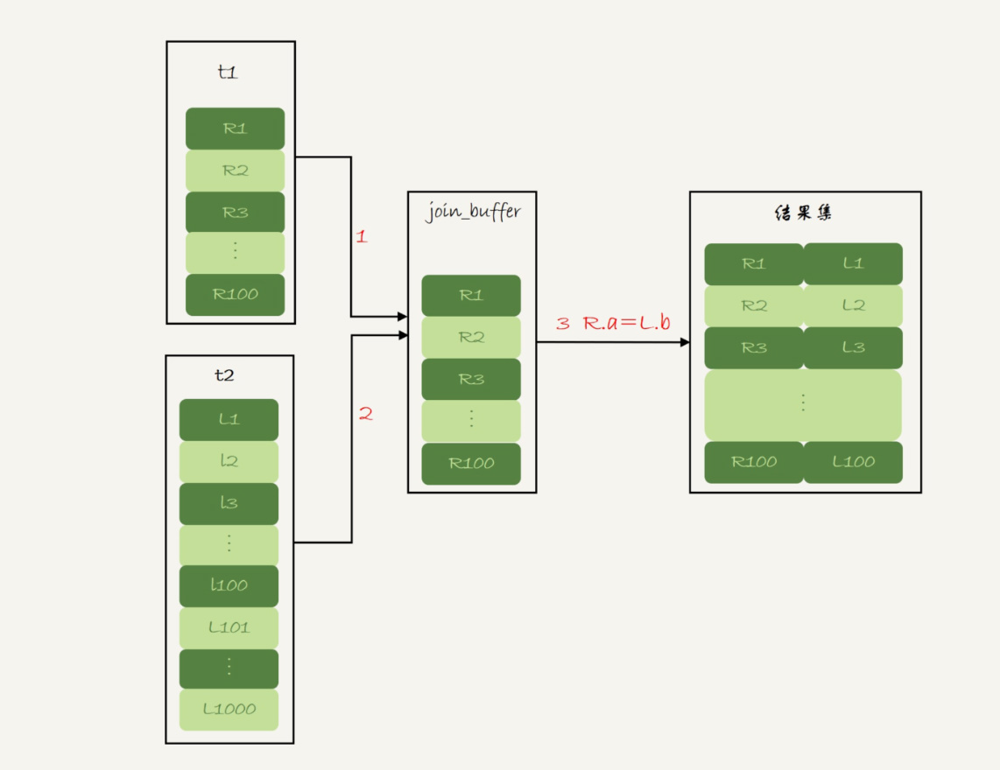

- 00 开篇词 这一次，让我们一起来搞懂MySQL.md.html
- 01 基础架构：一条SQL查询语句是如何执行的？.md.html
- 02 日志系统：一条SQL更新语句是如何执行的？.md.html
- 03 事务隔离：为什么你改了我还看不见？.md.html
- 04 深入浅出索引（上）.md.html
- 05 深入浅出索引（下）.md.html
- 06 全局锁和表锁 ：给表加个字段怎么有这么多阻碍？.md.html
- 07 行锁功过：怎么减少行锁对性能的影响？.md.html
- 08 事务到底是隔离的还是不隔离的？.md.html
- 09 普通索引和唯一索引，应该怎么选择？.md.html
- 10 MySQL为什么有时候会选错索引？.md.html
- 11 怎么给字符串字段加索引？.md.html
- 12 为什么我的MySQL会“抖”一下？.md.html
- 13 为什么表数据删掉一半，表文件大小不变？.md.html
- 14 count()这么慢，我该怎么办？.md.html
- 15 答疑文章（一）：日志和索引相关问题.md.html
- 16 “order by”是怎么工作的？.md.html
- 17 如何正确地显示随机消息？.md.html
- 18 为什么这些SQL语句逻辑相同，性能却差异巨大？.md.html
- 19 为什么我只查一行的语句，也执行这么慢？.md.html
- 20 幻读是什么，幻读有什么问题？.md.html
- 21 为什么我只改一行的语句，锁这么多？.md.html
- 22 MySQL有哪些“饮鸩止渴”提高性能的方法？.md.html
- 23 MySQL是怎么保证数据不丢的？.md.html
- 24 MySQL是怎么保证主备一致的？.md.html
- 25 MySQL是怎么保证高可用的？.md.html
- 26 备库为什么会延迟好几个小时？.md.html
- 27 主库出问题了，从库怎么办？.md.html
- 28 读写分离有哪些坑？.md.html
- 29 如何判断一个数据库是不是出问题了？.md.html
- 30 答疑文章（二）：用动态的观点看加锁.md.html
- 31 误删数据后除了跑路，还能怎么办？.md.html
- 32 为什么还有kill不掉的语句？.md.html
- 33 我查这么多数据，会不会把数据库内存打爆？.md.html
- 34 到底可不可以使用join？.md.html
- 35 join语句怎么优化？.md.html
- 36 为什么临时表可以重名？.md.html
- 37 什么时候会使用内部临时表？.md.html
- 38 都说InnoDB好，那还要不要使用Memory引擎？.md.html
- 39 自增主键为什么不是连续的？.md.html
- 40 insert语句的锁为什么这么多？.md.html
- 41 怎么最快地复制一张表？.md.html
- 42 grant之后要跟着flush privileges吗？.md.html
- 43 要不要使用分区表？.md.html
- 44 答疑文章（三）：说一说这些好问题.md.html
- 45 自增id用完怎么办？.md.html
- 我的MySQL心路历程.md.html
- 结束语 点线网面，一起构建MySQL知识网络.md.html
- 捐赠
34 到底可不可以使用join？
在实际生产中，关于 join 语句使用的问题，一般会集中在以下两类：
- 我们 DBA 不让使用 join，使用 join 有什么问题呢？
- 如果有两个大小不同的表做 join，应该用哪个表做驱动表呢？
今天这篇文章，我就先跟你说说 join 语句到底是怎么执行的，然后再来回答这两个问题。
为了便于量化分析，我还是创建两个表 t1 和 t2 来和你说明。
CREATE TABLE `t2` (
`id` int(11) NOT NULL,
`a` int(11) DEFAULT NULL,
`b` int(11) DEFAULT NULL,
PRIMARY KEY (`id`),
KEY `a` (`a`)
) ENGINE=InnoDB;
drop procedure idata;
delimiter ;;
create procedure idata()
begin
declare i int;
set i=1;
while(i<=1000)do
insert into t2 values(i, i, i);
set i=i+1;
end while;
end;;
delimiter ;
call idata();
create table t1 like t2;
insert into t1 (select * from t2 where id<=100)
可以看到，这两个表都有一个主键索引 id 和一个索引 a，字段 b 上无索引。存储过程 idata() 往表 t2 里插入了 1000 行数据，在表 t1 里插入的是 100 行数据。
Index Nested-Loop Join
我们来看一下这个语句：
select * from t1 straight_join t2 on (t1.a=t2.a);
如果直接使用 join 语句，MySQL 优化器可能会选择表 t1 或 t2 作为驱动表，这样会影响我们分析 SQL 语句的执行过程。所以，为了便于分析执行过程中的性能问题，我改用 straight_join 让 MySQL 使用固定的连接方式执行查询，这样优化器只会按照我们指定的方式去 join。在这个语句里，t1 是驱动表，t2 是被驱动表。
现在，我们来看一下这条语句的 explain 结果。

图 1 使用索引字段 join 的 explain 结果
可以看到，在这条语句里，被驱动表 t2 的字段 a 上有索引，join 过程用上了这个索引，因此这个语句的执行流程是这样的：
- 从表 t1 中读入一行数据 R；
- 从数据行 R 中，取出 a 字段到表 t2 里去查找；
- 取出表 t2 中满足条件的行，跟 R 组成一行，作为结果集的一部分；
- 重复执行步骤 1 到 3，直到表 t1 的末尾循环结束。
这个过程是先遍历表 t1，然后根据从表 t1 中取出的每行数据中的 a 值，去表 t2 中查找满足条件的记录。在形式上，这个过程就跟我们写程序时的嵌套查询类似，并且可以用上被驱动表的索引，所以我们称之为“Index Nested-Loop Join”，简称 NLJ。
它对应的流程图如下所示：

图 2 Index Nested-Loop Join 算法的执行流程
在这个流程里：
- 对驱动表 t1 做了全表扫描，这个过程需要扫描 100 行；
- 而对于每一行 R，根据 a 字段去表 t2 查找，走的是树搜索过程。由于我们构造的数据都是一一对应的，因此每次的搜索过程都只扫描一行，也是总共扫描 100 行；
- 所以，整个执行流程，总扫描行数是 200。
现在我们知道了这个过程，再试着回答一下文章开头的两个问题。
先看第一个问题：能不能使用 join?
假设不使用 join，那我们就只能用单表查询。我们看看上面这条语句的需求，用单表查询怎么实现。
- 执行
select * from t1，查出表 t1 的所有数据，这里有 100 行； - 循环遍历这 100 行数据：
- 从每一行 R 取出字段 a 的值 $R.a；
- 执行
select * from t2 where a=$R.a； - 把返回的结果和 R 构成结果集的一行。
可以看到，在这个查询过程，也是扫描了 200 行，但是总共执行了 101 条语句，比直接 join 多了 100 次交互。除此之外，客户端还要自己拼接 SQL 语句和结果。
显然，这么做还不如直接 join 好。
我们再来看看第二个问题：怎么选择驱动表？
在这个 join 语句执行过程中，驱动表是走全表扫描，而被驱动表是走树搜索。
假设被驱动表的行数是 M。每次在被驱动表查一行数据，要先搜索索引 a，再搜索主键索引。每次搜索一棵树近似复杂度是以 2 为底的 M 的对数，记为 log2M，所以在被驱动表上查一行的时间复杂度是 2*log2M。
假设驱动表的行数是 N，执行过程就要扫描驱动表 N 行，然后对于每一行，到被驱动表上匹配一次。
因此整个执行过程，近似复杂度是 N + N*2*log2M。
显然，N 对扫描行数的影响更大，因此应该让小表来做驱动表。
如果你没觉得这个影响有那么“显然”， 可以这么理解：N 扩大 1000 倍的话，扫描行数就会扩大 1000 倍；而 M 扩大 1000 倍，扫描行数扩大不到 10 倍。
到这里小结一下，通过上面的分析我们得到了两个结论：
- 使用 join 语句，性能比强行拆成多个单表执行 SQL 语句的性能要好；
- 如果使用 join 语句的话，需要让小表做驱动表。
但是，你需要注意，这个结论的前提是“可以使用被驱动表的索引”。
接下来，我们再看看被驱动表用不上索引的情况。
Simple Nested-Loop Join
现在，我们把 SQL 语句改成这样：
select * from t1 straight_join t2 on (t1.a=t2.b);
由于表 t2 的字段 b 上没有索引，因此再用图 2 的执行流程时，每次到 t2 去匹配的时候，就要做一次全表扫描。
你可以先设想一下这个问题，继续使用图 2 的算法，是不是可以得到正确的结果呢？如果只看结果的话，这个算法是正确的，而且这个算法也有一个名字，叫做“Simple Nested-Loop Join”。
但是，这样算来，这个 SQL 请求就要扫描表 t2 多达 100 次，总共扫描 100*1000=10 万行。
这还只是两个小表，如果 t1 和 t2 都是 10 万行的表（当然了，这也还是属于小表的范围），就要扫描 100 亿行，这个算法看上去太“笨重”了。
当然，MySQL 也没有使用这个 Simple Nested-Loop Join 算法，而是使用了另一个叫作“Block Nested-Loop Join”的算法，简称 BNL。
Block Nested-Loop Join
这时候，被驱动表上没有可用的索引，算法的流程是这样的：
- 把表 t1 的数据读入线程内存 join_buffer 中，由于我们这个语句中写的是 select *，因此是把整个表 t1 放入了内存；
- 扫描表 t2，把表 t2 中的每一行取出来，跟 join_buffer 中的数据做对比，满足 join 条件的，作为结果集的一部分返回。
这个过程的流程图如下：

图 3 Block Nested-Loop Join 算法的执行流程
对应地，这条 SQL 语句的 explain 结果如下所示：
图 4 不使用索引字段 join 的 explain 结果
可以看到，在这个过程中，对表 t1 和 t2 都做了一次全表扫描，因此总的扫描行数是 1100。由于 join_buffer 是以无序数组的方式组织的，因此对表 t2 中的每一行，都要做 100 次判断，总共需要在内存中做的判断次数是：100*1000=10 万次。
前面我们说过，如果使用 Simple Nested-Loop Join 算法进行查询，扫描行数也是 10 万行。因此，从时间复杂度上来说，这两个算法是一样的。但是，Block Nested-Loop Join 算法的这 10 万次判断是内存操作，速度上会快很多，性能也更好。
接下来，我们来看一下，在这种情况下，应该选择哪个表做驱动表。
假设小表的行数是 N，大表的行数是 M，那么在这个算法里：
- 两个表都做一次全表扫描，所以总的扫描行数是 M+N；
- 内存中的判断次数是 M*N。
可以看到，调换这两个算式中的 M 和 N 没差别，因此这时候选择大表还是小表做驱动表，执行耗时是一样的。
然后，你可能马上就会问了，这个例子里表 t1 才 100 行，要是表 t1 是一个大表，join_buffer 放不下怎么办呢？
join_buffer 的大小是由参数 join_buffer_size 设定的，默认值是 256k。如果放不下表 t1 的所有数据话，策略很简单，就是分段放。我把 join_buffer_size 改成 1200，再执行：
select * from t1 straight_join t2 on (t1.a=t2.b);
执行过程就变成了：
- 扫描表 t1，顺序读取数据行放入 join_buffer 中，放完第 88 行 join_buffer 满了，继续第 2 步；
- 扫描表 t2，把 t2 中的每一行取出来，跟 join_buffer 中的数据做对比，满足 join 条件的，作为结果集的一部分返回；
- 清空 join_buffer；
- 继续扫描表 t1，顺序读取最后的 12 行数据放入 join_buffer 中，继续执行第 2 步。
执行流程图也就变成这样：

图 5 Block Nested-Loop Join – 两段
图中的步骤 4 和 5，表示清空 join_buffer 再复用。
这个流程才体现出了这个算法名字中“Block”的由来，表示“分块去 join”。
可以看到，这时候由于表 t1 被分成了两次放入 join_buffer 中，导致表 t2 会被扫描两次。虽然分成两次放入 join_buffer，但是判断等值条件的次数还是不变的，依然是 (88+12)*1000=10 万次。
我们再来看下，在这种情况下驱动表的选择问题。
假设，驱动表的数据行数是 N，需要分 K 段才能完成算法流程，被驱动表的数据行数是 M。
注意，这里的 K 不是常数，N 越大 K 就会越大，因此把 K 表示为λ*N，显然λ的取值范围是 (0,1)。
所以，在这个算法的执行过程中：
- 扫描行数是 N+λ*N*M；
- 内存判断 N*M 次。
显然，内存判断次数是不受选择哪个表作为驱动表影响的。而考虑到扫描行数，在 M 和 N 大小确定的情况下，N 小一些，整个算式的结果会更小。
所以结论是，应该让小表当驱动表。
当然，你会发现，在 N+λ*N*M 这个式子里，λ才是影响扫描行数的关键因素，这个值越小越好。
刚刚我们说了 N 越大，分段数 K 越大。那么，N 固定的时候，什么参数会影响 K 的大小呢？（也就是λ的大小）答案是 join_buffer_size。join_buffer_size 越大，一次可以放入的行越多，分成的段数也就越少，对被驱动表的全表扫描次数就越少。
这就是为什么，你可能会看到一些建议告诉你，如果你的 join 语句很慢，就把 join_buffer_size 改大。
理解了 MySQL 执行 join 的两种算法，现在我们再来试着回答文章开头的两个问题。
第一个问题：能不能使用 join 语句？
- 如果可以使用 Index Nested-Loop Join 算法，也就是说可以用上被驱动表上的索引，其实是没问题的；
- 如果使用 Block Nested-Loop Join 算法，扫描行数就会过多。尤其是在大表上的 join 操作，这样可能要扫描被驱动表很多次，会占用大量的系统资源。所以这种 join 尽量不要用。
所以你在判断要不要使用 join 语句时，就是看 explain 结果里面，Extra 字段里面有没有出现“Block Nested Loop”字样。
第二个问题是：如果要使用 join，应该选择大表做驱动表还是选择小表做驱动表？
- 如果是 Index Nested-Loop Join 算法，应该选择小表做驱动表；
- 如果是 Block Nested-Loop Join 算法：
- 在 join_buffer_size 足够大的时候，是一样的；
- 在 join_buffer_size 不够大的时候（这种情况更常见），应该选择小表做驱动表。
所以，这个问题的结论就是，总是应该使用小表做驱动表。
当然了，这里我需要说明下，什么叫作“小表”。
我们前面的例子是没有加条件的。如果我在语句的 where 条件加上 t2.id<=50 这个限定条件，再来看下这两条语句：
select * from t1 straight_join t2 on (t1.b=t2.b) where t2.id<=50;
select * from t2 straight_join t1 on (t1.b=t2.b) where t2.id<=50;
注意，为了让两条语句的被驱动表都用不上索引，所以 join 字段都使用了没有索引的字段 b。
但如果是用第二个语句的话，join_buffer 只需要放入 t2 的前 50 行，显然是更好的。所以这里，“t2 的前 50 行”是那个相对小的表，也就是“小表”。
我们再来看另外一组例子：
select t1.b,t2.* from t1 straight_join t2 on (t1.b=t2.b) where t2.id<=100;
select t1.b,t2.* from t2 straight_join t1 on (t1.b=t2.b) where t2.id<=100;
这个例子里，表 t1 和 t2 都是只有 100 行参加 join。但是，这两条语句每次查询放入 join_buffer 中的数据是不一样的：
- 表 t1 只查字段 b，因此如果把 t1 放到 join_buffer 中，则 join_buffer 中只需要放入 b 的值；
- 表 t2 需要查所有的字段，因此如果把表 t2 放到 join_buffer 中的话，就需要放入三个字段 id、a 和 b。
这里，我们应该选择表 t1 作为驱动表。也就是说在这个例子里，“只需要一列参与 join 的表 t1”是那个相对小的表。
所以，更准确地说，在决定哪个表做驱动表的时候，应该是两个表按照各自的条件过滤，过滤完成之后，计算参与 join 的各个字段的总数据量，数据量小的那个表，就是“小表”，应该作为驱动表。
小结
今天，我和你介绍了 MySQL 执行 join 语句的两种可能算法，这两种算法是由能否使用被驱动表的索引决定的。而能否用上被驱动表的索引，对 join 语句的性能影响很大。
通过对 Index Nested-Loop Join 和 Block Nested-Loop Join 两个算法执行过程的分析，我们也得到了文章开头两个问题的答案：
- 如果可以使用被驱动表的索引，join 语句还是有其优势的；
- 不能使用被驱动表的索引，只能使用 Block Nested-Loop Join 算法，这样的语句就尽量不要使用；
- 在使用 join 的时候，应该让小表做驱动表。
最后，又到了今天的问题时间。
我们在上文说到，使用 Block Nested-Loop Join 算法，可能会因为 join_buffer 不够大，需要对被驱动表做多次全表扫描。
我的问题是，如果被驱动表是一个大表，并且是一个冷数据表，除了查询过程中可能会导致 IO 压力大以外，你觉得对这个 MySQL 服务还有什么更严重的影响吗？（这个问题需要结合上一篇文章的知识点）
你可以把你的结论和分析写在留言区，我会在下一篇文章的末尾和你讨论这个问题。感谢你的收听，也欢迎你把这篇文章分享给更多的朋友一起阅读。
上期问题时间
我在上一篇文章最后留下的问题是，如果客户端由于压力过大，迟迟不能接收数据，会对服务端造成什么严重的影响。
这个问题的核心是，造成了“长事务”。
至于长事务的影响，就要结合我们前面文章中提到的锁、MVCC 的知识点了。
- 如果前面的语句有更新，意味着它们在占用着行锁，会导致别的语句更新被锁住；
- 当然读的事务也有问题，就是会导致 undo log 不能被回收，导致回滚段空间膨胀。
© 2019 - 2023 Liangliang Lee. Powered by gin and hexo-theme-book.